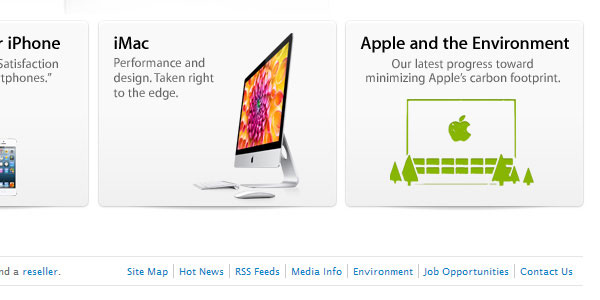

От автора: хорошая страница контактов очень важна для поддержания отношений со своими посетителями. Говорим ли мы об электронной коммерции, журналах, личных вебсайтах, онлайн-сервисах – как первое средство коммуникации с вами пользователи обычно ищут контактную страницу. Странно, но многие веб-дизайнеры пренебрегают скромной контактной страницей, даже считают ее одним из наименее важных аспектов вебсайта. Давайте это исправим.
Страницу контактов часто упускают из вида. Сколько вебсайтов вы посещали, желая связаться, чтобы пожаловаться на продукт или услугу, или задать вопрос? И как часто вам приходилось сражаться с контактной формой?
Хорошая контактная страница выгодна любому виду бизнеса. Она способна увеличить удовлетворенность клиентов, помогая с решением их проблем. Она также может помочь улучшить свою продукцию и услуги, обеспечив широкую дорогу для ценного отзыва.
Когда речь заходит об отзыве непосредственного пользователя, прочие каналы могут оказаться ограниченными. Телевидение, радио, журналы, газеты… все они являются формой односторонней коммуникации. Онлайн-коммуникация должна быть улицей с двусторонним движением; диалогом между бизнесом и посетителем. Получают пользу от этого обе стороны, и вот отчего так важна хорошая страница контактов.
Первый шаг: место размещения вашей контактной информации. Нет смысла иметь самую лучшую контактную страницу на свете, если ваши посетители не могут ее найти. Помочь им можно, если придерживаться некоторых дизайнерских традиций.
В общем, контактная информация может находиться в двух местах:
Основная навигация – идеальное место для ссылки на контактную страницу. Посетители обычно ищут контактную страницу справа, потому что она видится элементом второстепенного значения. Следовательно, вы просто увидите ссылку на контактную страницу, как один из последних элементов навигации сайта.
Еще мы можем посмотреть на меньшую субнавигацию в верхнем правом углу экрана. Это тоже ценная позиция для контактной страницы. К слову, лучше избегать размещения контактной страницы в выпадающем меню, так как там ее легко пропустить.
Нижний колонтитул также является популярным местом для контактной информации. Он может содержать ссылку на контактную страницу:

…либо самую важную контактную информацию:
Предсказать поток посетителей на контактную страницу сложно, так что размещение ссылок по меньшей мере в двух упомянутых местах хорошо подстрахует вас.
Самое важное в странице контактов Теперь вы спокойны – ваши посетители смогут найти путь к контактной странице, и пора подумать о ее фактическом содержимом. Начнем с основного и рассмотрим ту информацию, которая должна быть представлена. Адрес электронной почты / контактная формаПеред созданием дизайна своей контактной страницы убедитесь, что посетители способны ее найти. Сделайте на нее ссылку из основной навигации или нижнего колонтитула. Помните, что большинство людей ищут контактную информацию на правой стороне экрана. Продумайте, какую информацию нужно включить. Насущно важна возможность послать сообщение через электронную почту или контактную форму. Адрес и номер телефона тоже могут оказаться полезными. Дополнительная информация, такая как ссылки на профили в социальных сетях и часы работы для некоторых видов бизнеса, тоже нужна.
Важна интерактивность. Примените атрибут mailto для адресов электронной почты и атрибут tel: для телефонных номеров (очень пригодится посетителям с мобильных устройств). Можно вставить интерактивную карту, такую как Google Maps, но обдумайте ее последствия для производительности.
Юзабилити контактной формы может создать или разрушить контактную страницу. Запрашивайте только самую необходимую информацию. Избежать головной боли можно, показывая правильный формат полей ввода и применяя внутреннюю валидацию. На забывайте отображать успешную отправку сообщений при отправке формы.
Автор: Kevin Vertommen
Источник: http://webdesign.tutsplus.com/
Редакция: Команда webformyself.